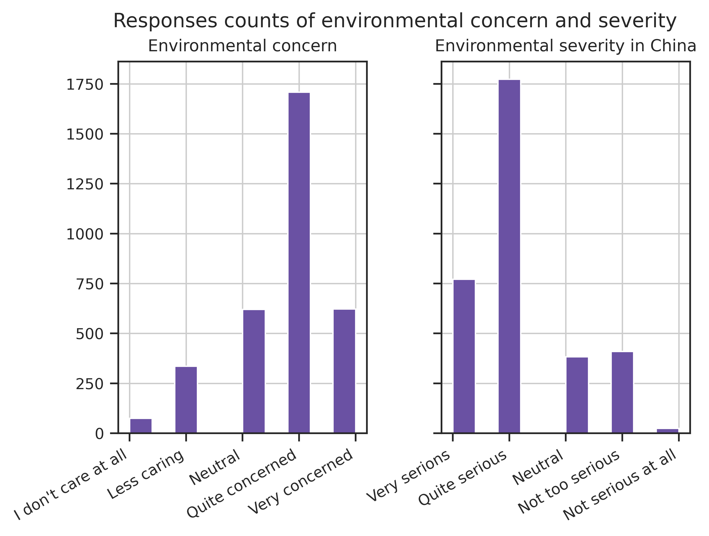
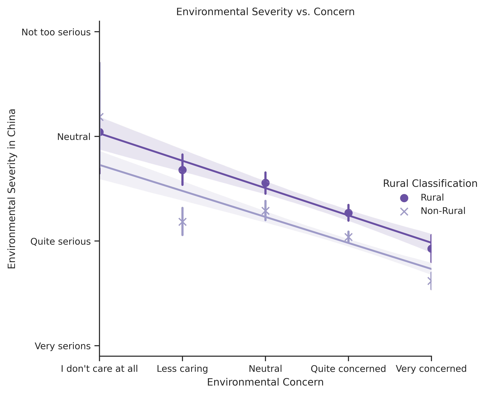
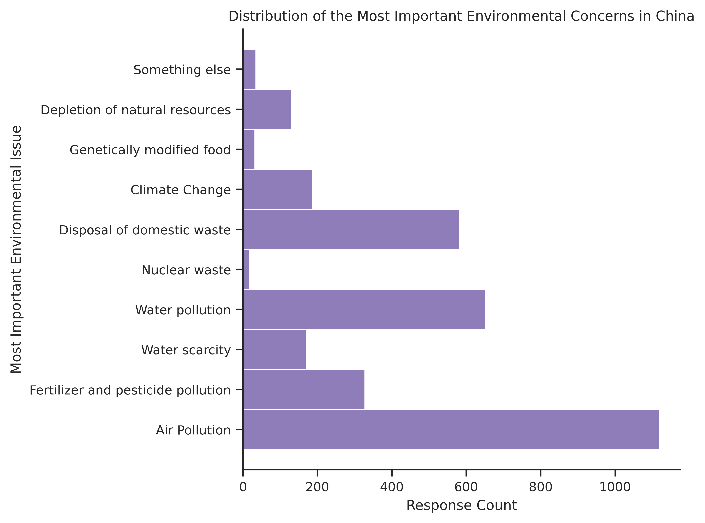
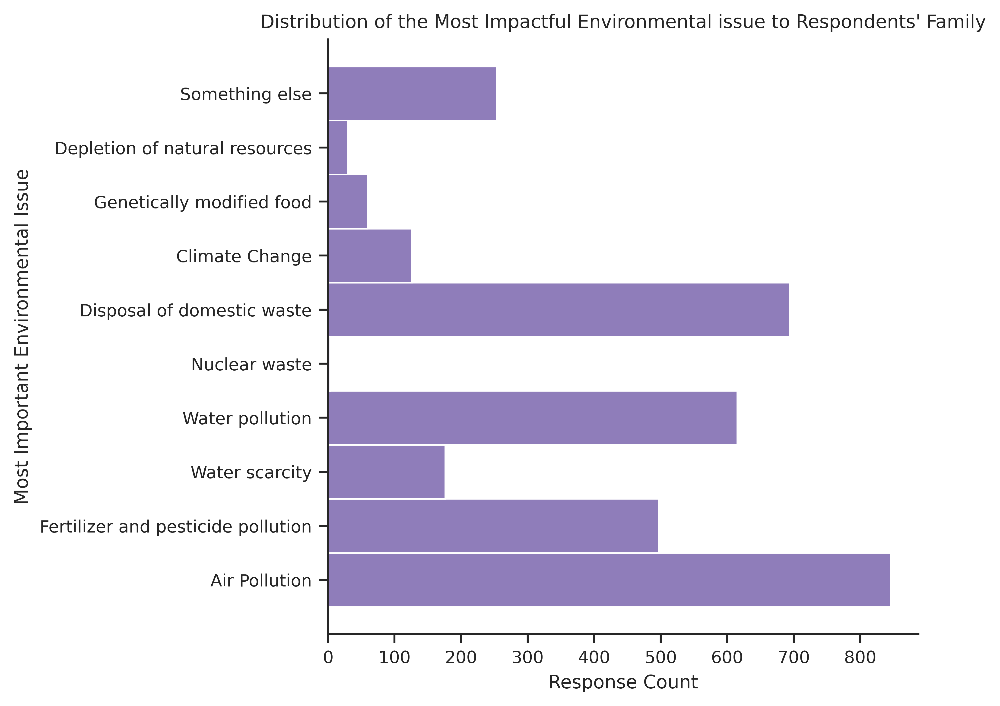
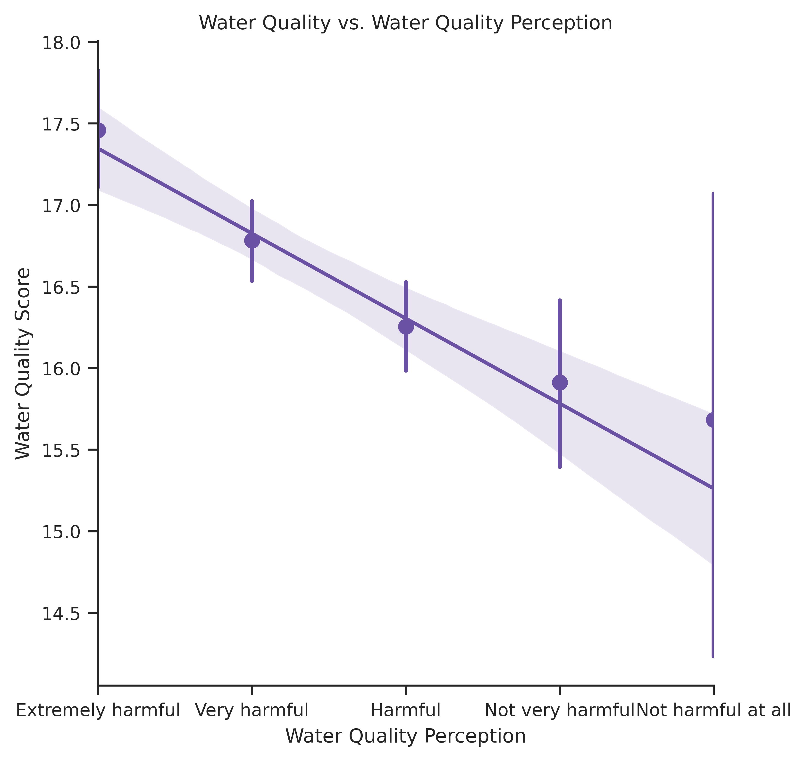
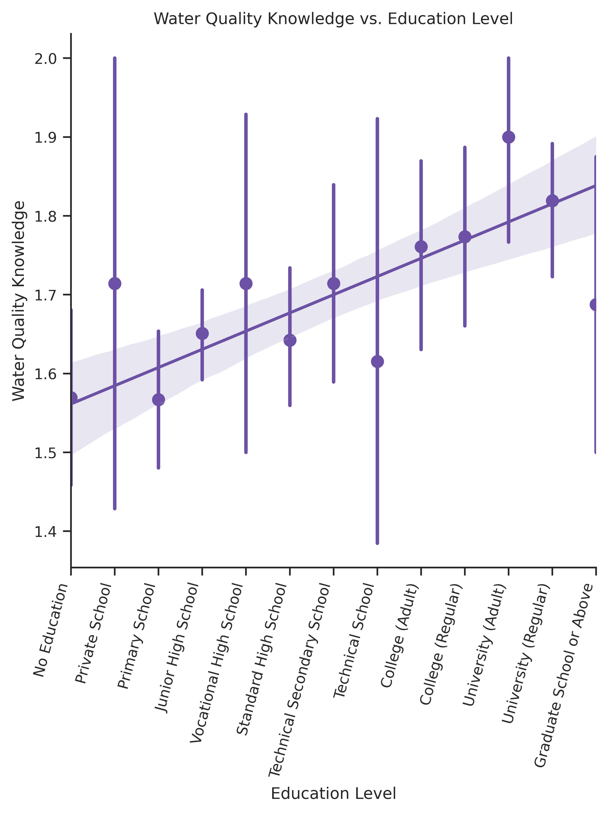
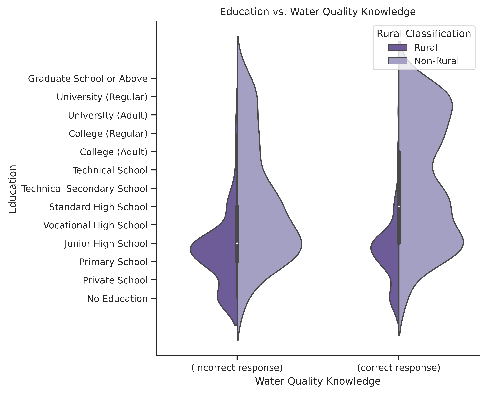
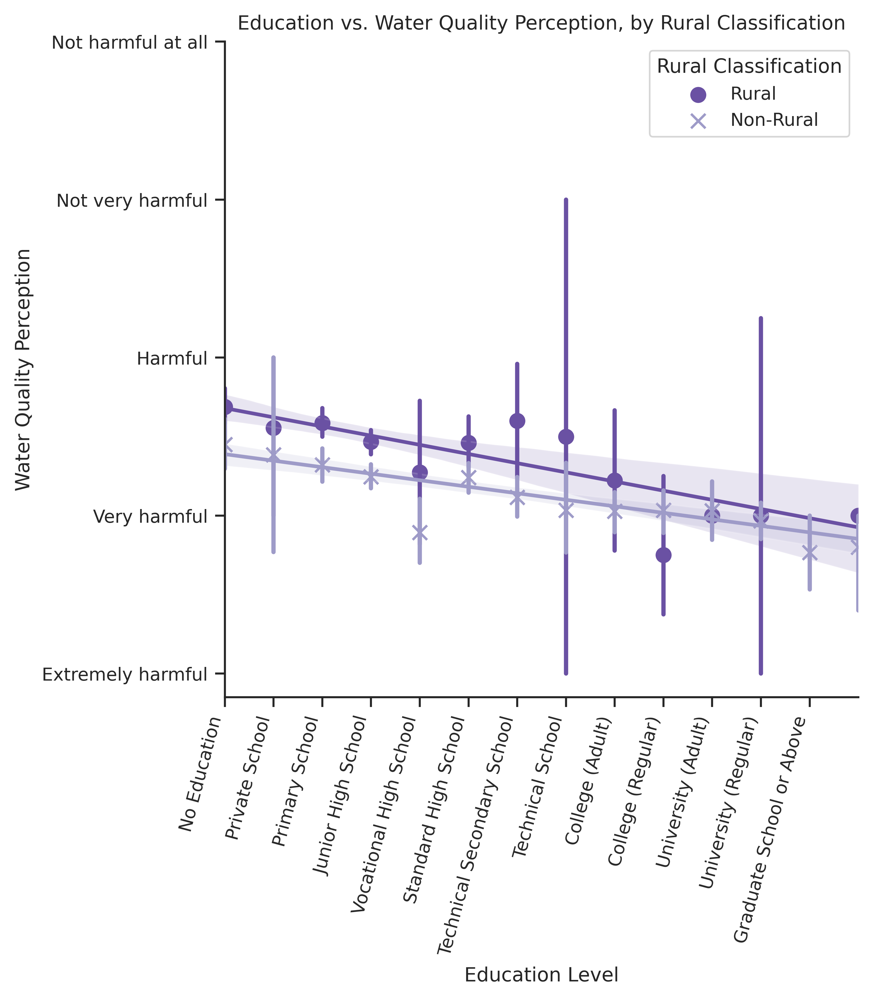
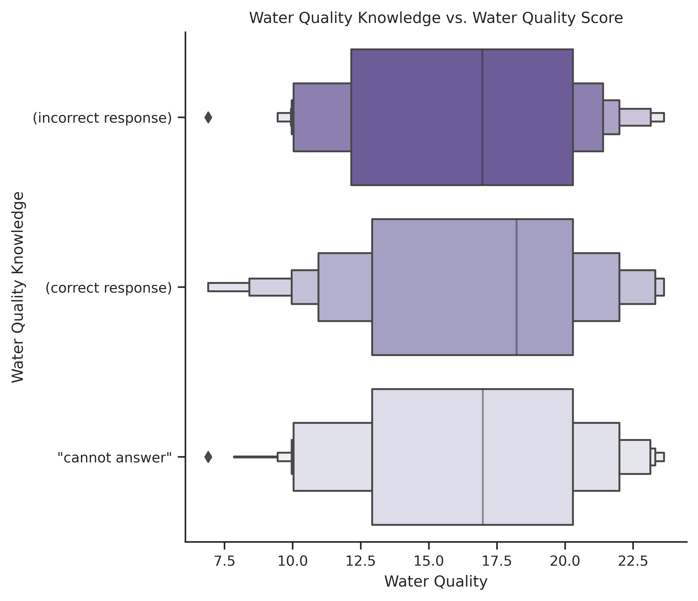

Analysis and Discussion
Contents
Analysis and Discussion¶
Results¶
The following is a summary of the results of the analysis. The code and procedure can be referred to in the #appendix section.
Overall, respondents are self-report a fairly high level of concern regarding environmental issues, and a high level of awareness for environmental issues facing China. 1
Response Value |
l6a |
l6b |
|---|---|---|
1 |
I don’t care at all |
Very serious |
2 |
Less caring |
More serious |
3 |
I can’t say that I don’t care about it |
Neither serious nor not serious |
4 |
More concerned |
Not too serious |
5 |
Very concerned |
Not serious at all |
For l6a and l6b (\(n=3362\)) the mean response was 3.67 and 2.15 respectively, noting the structure of the data – an increase in l6a notes an increase in concern while a decrease in l6b notes an increase in awareness. The distribution of responses is the following:

The trend is consistent across most provinces, water quality, gender, education levels, age groups, and rural classification.

Concern of water pollution ranked high on respondents’ overall environmental concerns. Respondents ranked the issue which they think is the most important in China (\(n=3218\)) and the one which affects their family the most (\(n=3045\)). Water pollution was the second most common response for their most important environmental concern, behind air pollution and ahead of domestic waste disposal. Water scarcity ranked lower. For respondents’ concern for issues affecting their families, water pollution was the third most common response, behind domestic waste disposal and ahead of fertilizer and pesticide pollution.
Code |
Name |
|---|---|
1 |
Air Pollution |
2 |
Fertilizer and pesticide pollution |
3 |
Water scarcity |
4 |
Water pollution |
5 |
Nuclear waste |
6 |
Disposal of domestic waste |
7 |
Climate Change |
8 |
Genetically modified food |
9 |
Depletion of natural resources |
10 |
None of the above |


For the following hypotheses, it is important to remember the question types and response ranges. As the level of perceived harm increases for l14d, the value decreases. As responses approaches 2 for l2409, the knowledge about water quality issues is assumed to increase. While this is as set of binary responses, it is calculated as a mean later in this analysis.
Value |
|
|
|---|---|---|
How do you think the pollution of rivers, rivers and lakes in China is harmful to the environment? |
In the domestic water pollution report, the water quality of Category V (5) is better than that of Category I (1) |
|
1 |
Extremely harmful to the environment |
Correct |
2 |
Very harmful |
Error (note: this response is correct) |
3 |
Some hazards |
- |
4 |
Not very harmful |
- |
5 |
There is no harm at all |
- |
It should be noted that there are discrepancies in both the number of responses per province, per type of value (demographic variable or question response), and for the number of water quality measurements per province. Thus, conclusions from individual provinces should be taken with caution – for example, data from Tibet (s41= 25) is especially scarce. Thus, analysis regarding the impact of respondents residing in specific provinces, and any differences solely stemming from the province of residence, was not investigated.
Hypothesis 1:¶
Local (provincial) water quality relates to water quality perception.
There is a statistically significant (\(p=4.98 \text{e-}9\)) correlation with a large number of responses (\(n = 3253\)). Thus, actual water quality is related to perception of water quality, and worse water quality relates to an increase in perception of severity. However, there is a poor regression fit (coefficient of determination \(r=-0.1023\)). Note that the range of water quality scores is large when respondents reply with the most-severe perception response type (l14d= 5).

Hypothesis 2¶
An increase knowledge of water quality issues (l2409) relates to an increased perception of severity (l14d)
There appears to be a relationship between water quality knowledge and perception from the smaller sample size (\(n=861\)). Respondents who replied incorrectly (when \(\text{l2409}=1\)) (\(n=282\)) have a mean perception response \(\text{l14d}=2.383\), while respondents who replied correctly (when \(\text{l2409}=2\)) (\(n=579\)) have a mean perception response \(\text{l14d}=2.197\).
There is a statistically significant (\(p= 8.81 \text{e-}4\)) correlation, however there is a poor regression fit (coefficient of determination \(r=-0.1023\)).
With increased water quality knowledge (\(\text{l2409}=2\)), environmental perception is increased (decreased l14d). However, this trend is no longer visible when factoring for rural/urban a91, education level a7a, and for other demographic question. For more conclusive results, further multi-variable statistical analysis is required.

Hypothesis 3¶
Increased education (a7a) relates to more knowledge about water quality (l2409)
There seems to be a relation between these two variables. Since l2409 is analyzed as a binary variable (only two responses), values from each education level are averaged to find the mean.

There is a statistically significant (\(p= 1 \text{e-}6\)) correlation, however there is a poor regression fit (\(r=-0.16\)) with a smaller sample size \(n=881\). Further comparison with rural versus non-rural responses reveal large differences in both the typical level of education and the number of responses per rural classifier.

Hypothesis 4¶
Increased education (a7a) relates to an increased perception of severity (l14d)
There is a clear trend between education and perception, with a larger sample size (\(n=3252\)). There is a statistically significant correlation (\(p \approx 0\)). There is a fairly low regression fit (\(r=-0.2109\)).

When differentiated by rural classification, an interesting trend becomes evident: non-rural households have a higher perception than rural households at each education level, however this difference decreases as education increases. Analysis into the reason behind this was not conducted.

Hypothesis 5¶
There is a significant difference in perception of severity of water quality issues (l14d) between urban and rural households (a91).
With a larger sample size (\(n=3252\)), a statistically-significant difference was found (\(p \approx 0\)). There is a fairly low regression fit (\(r=-0.2018\)) The mean l14d value per rural classification was calculated. However, education levels vary significantly between rural and non-rural respondents.
Rural Classification |
Number of Responses |
Mean Perception (l14d) |
Mean Education Level (a7a) |
|---|---|---|---|
Rural (a91 = 1) |
1257 |
2.536 |
3.48 |
Non-rural (a91 = 2) |
1995 |
2.172 |
6.24 |
Hypothesis 6¶
There is a relation between water quality and water quality knowledge.
There seems to be a small but statistically-significant difference (\(p \approx 0\)) between water quality knowledge levels and water quality. With a large number of responses (\(n=3628\)), a decrease in knowledge relates to a decrease in water quality. With knowledgeable respondents (l2409= 2), the mean water quality was 16.85. With somewhat knowledgeable respondents (l2409 = 8), the mean water quality was 16.56. Finally, with respondents with no knowledge (l2409 = 1), the mean water quality was 16.20. The statistically-significant difference was not matched with any level of confidence in the fit of the model, with \(r = -0.10\). It should be noted that with this hypothesis, response types equal to 8 (“can’t answer”) were included while they were omitted previously.

Analysis¶
The analysis above produced interesting results. Overall, the first five hypotheses were proven correct, with the limitation that all regression analyses provide a poor fit to model these trends. The sixth hypothesis shows a statistically-significant difference, but a trend is harder to be confident about. This can be explained that there are variable(s) which are contributing to this trend which are not accounted for in the simple two-variable regression analysis. Another interpretation could be that there factors influencing these correlations which are not accounted for in the data sets analyzed for this thesis. Further analysis is required to explain the causes of this poor fit. The limitations discussed previously, including geographic precision, differences in periods of time and applicability of the analyzed questions, should also be noted. Given more data, specifically updated CGSS results when the environmental module is included, would give the opportunity to conduct a longitudinal analysis.
Further research could be done based off of the two datasets. Different questions could be used to complement this research. One example is how engagement was measured. Those who are more aware about environmental issues in general may be more knowledgeable about water issues (l7a). To quantify perception in a different way, one could use respondents who say water is #1\ from l7a l7b instead of l14dand if the trends matching education, perception and quality are the same. Those who think l14d is harmful probably think that water pollution is #1\ for l7a and l7b. As mentioned, there are hundreds of questions and demographic variables, so other analysis could be undertaken which includes direct political satisfaction, income, health and well-being, and so on.
Discussion¶
The discourse on water quality should have a more holistic focus which values local knowledge, subjective perspectives and increased awareness to complement the current primary focus on direct water quality.
Issues and Implications¶
China has made a range of commitments, and notable action, on improving the country’s water quality. The government invested 717.6b RMB (US$110.3b) to address water quality, quantity and flooding issues in 2017 alone. [@theworldbankWatershedNewEra2019, p.. vii]. The priority improvement method is infrastructure development – Since the founding of the P.R.C., over 800 billion cubic meters of water storage has been constructed though over 400 thousand kilometers of river dikes and over 98000 reservoirs. [@theworldbankWatershedNewEra2019, p. 2] Additionally, nearly 6000 water supply projects provide rural services to more than 800 million people.
The Three Red Lines policy best states the central government’s aims to address water resources issues: [@theworldbankWatershedNewEra2019, box. 1.2]
Water quantity: By 2030, total water use must not exceed 700 billion cubic meters.
Water use efficiency: By 2030, industries will reduce their water use per US$1600 (RMB 10,000) of industrial added value to 40 cubic meters. In addition, by 2030, irrigation efficiency must exceed 60 percent.
Water quality: By 2030, 95 percent of water function zones must comply with water quality standards. In addition, by 2030 all sources of drinking water will meet set standards for both rural and urban areas and all water function zones will comply with water quality standards
Progress is being made towards Sustainable Development Goals 6 – Clean Water and Sanitation. However, China still has substantial improvements to make: for example, water stress is high and expected to increase (SDG 6.4.2), and household wastewater treatment is low (SDG 6.3.1 - 38%). [@CountryAreaSDG]
SDG 6.3 focuses on water quality:
By 2030, improve water quality by reducing pollution, eliminating dumping and minimizing release of hazardous chemicals and materials, halving the proportion of untreated wastewater and substantially increasing recycling and safe reuse globally. [@martinWaterSanitation]
Another key component to China’s water policy is its efficiency. SDG 6.4 focuses on this:
By 2030, substantially increase water-use efficiency across all sectors and ensure sustainable withdrawals and supply of freshwater to address water scarcity and substantially reduce the number of people suffering from water scarcity. [@martinWaterSanitation]
China is currently far from achieving this target. A recent study found that not only does China have a significant lack of resource efficiency, there are also significant discrepancies between provinces and across time frames. [@songWaterResourcesUtilization2018] This indicates the situation is local, and a homogeneous national-level solution may not be appropriate. Currently, China spends two to three times more than the average upper-middle-income country for the same economic output.2 [@theworldbankWatershedNewEra2019, p. 2] Furthermore, while agricultural and industrial water use has remained relatively constant in recent years, domestic use has and continues to increase.
The two main driving forces for economic growth with relation to water resources are quantity and utilization. [@chen2017way] Since current technology all but prohibits increasing the overall quantity, the main method of achieving economic growth is to increase the quantity of usable water (by increasing quality) and decreasing inefficiency.
The issues highlighted above lead to increased pressure and deterioration of ecosystem services. Natural ecological systems are decreasing in size, quality, and utility to provide benefits for the society – wetlands and riverbanks are decreasing in their ability to provide flood protection, and wetlands are less able to retain water. [@theworldbankWatershedNewEra2019, p. 3] Furthermore, biodiversity has declined significantly. This is at direct odds with China’s plan to become an ‘ecological civilization’, as highlighted in their 13th Five-Year Plan (2016-2020).
Another notable policy implication is China’s energy profile. Coal usage is more prevalent in the north, were water resources are less abundant. Since large quantities of water are required for fossil fuel production and use (roughly six cubic meters per ton of coal and roughly ten cubic meters per ton of oil), diminishing water resources have the potential to strain energy production. [@theworldbankWatershedNewEra2019, p. 3]
Many of these issues are exacerbated by policy coordination problems. While national standards have been discussed in this thesis, water resource management often is in the purview of local and provincial officials. [@theworldbankWatershedNewEra2019, p. 4] Water Resource Bureaus exist at all levels of administrative regions, from townships to provincial levels).
A Multi-Stakeholder, Multi-Scale Approach¶
This all leads to the conclusion that top-down, Beijing-lead infrastructure programs are not enough to meet many of the SDG 6 targets and indicators.
Engineering as a broader profession can be looked at through an ethical lens. Engineers, and engineering, should not be the end solution, they should be seen as a provider of a service in order to facilitate improvement through informed consent and participation. [@tafth.broomejrETHICSSlipperyEthics1986] states the issue eloquently:
“[E]ngineering is always an experiment involving the public as human subjects. This new view suggests that engineering always oversteps the limits of science. Decisions are always made with insufficient information. In this view, risks taken by people who depend on engineers are not really the risks over some error of scientific principle. More important and inevitable is the risk that the engineer, confronted with a totally novel technological problem, will incorrectly intuit which precedent that worked in the past can be successfully applied this time. […] Interestingly these new moral dimensions are not being created primarily by philosophers. They are the works of engineers themselves.”
Inclusion of local knowledge and expertise can reduce the impacts of this issue. The less-discussed SDG 6.B mentions this:
Support and strengthen the participation of local communities in improving water and sanitation management. [@martinWaterSanitation] #check-source
While data is limited, China had low participation from users and communities for drinking water, sanitation and hygiene promotion in both rural and urban areas, and only had moderate participation for national water resources planning and management in 2017. [@CountryAreaSDG] This seems to have improved with urban and rural drinking water, with high and moderate levels of participation in 2019, respectively.
Other sectors are also not very involved, due to poor economic policy instruments which do no properly incentivize innovative and sustainable water use. [@theworldbankWatershedNewEra2019, p. 7] Improvements in the pricing and accountability of water usage in both abject quantities and inter-agency knowledge sharing would improve the situation from a policy perspective.
The central government has an opportunity to increase local autonomy by playing a coordinating and supporting role. Beijing should continue to set standards and provide funding, but allow local administrators to adapt their implementation. This will have an improvement on regions with low-efficiency of water usage through cross-regional cooperation and communication. [@zhaoInterprovincialTwostageWater2017, sec. 4] Regional governments should prioritize water protection, domestic water usage and industrial motivations, as well as coordinate to reduce discrepancies in efficiency between urban and rural areas (urban areas are usually more efficient). [@zhaoInterprovincialTwostageWater2017, sec. 4]
[@priscoliWhatPublicParticipation2004] examined public participation in water resources management, and identified five areas of concern. Additional context has been added to points of relevance by the author.
Ethical dimensions of water management.
Access to safely managed water and sanitation services is a human right, which provides dignity. [@assembly2010resolution] This includes availability, quality, accessibility, affordability and safety. [@hellerCrisisWaterSupply2015]
Water management and civic culture.
“Civic responsibility is enhanced when citizens meaningfully participate in making decisions that affect their lives.” [@priscoliWhatPublicParticipation2004, p. 223] When water, civic culture and governance come together, knowledge transfer and empowerment occurs. While this phenomenon is not new ([@priscoliWhatPublicParticipation2004] cites the fountains in the public squares of many European cities), it is being lost as technical solutions become outside of the understanding of the average resident.
Tension between the technical and political.
As discussed previously, technical innovation is important for improving the water quality situation in China. However, in many societies, the technical and political realms operate separately and sometimes at odds with one another. It is important for policymakers to understand some of the technology they are legislating on, as well as for technical professionals to understand the policy mechanism and context.
Reconciling the discontinuities between geographic and jurisdictional boundaries.
This ties in with knowledge transfer and local realities, as mentioned previously. Since participation is ultimately a locally-led phenomenon, it is important to coordinate between localities effectively.
Need for better and more conflict management.
As water resources become more stressed under the pressure of more demanding users, having knowledgeable and skilled professionals and effective systems to mitigate conflict is vital.
With many of these points, knowledge and education can be the facilitators of positive improvements in the causes and effects of water resources issues.
Education¶
In addition to policy changes, education-focused policies should be implemented to directly and indirectly improve China’s water situation through knowledge and perception acquisition pathways.
First, water and environmental education should be expanded in scope and scale in China’s 9-year compulsory education. A study investigated the relationship between water conservation behavior and water education in Guangzhou, China though a survey (\(n=237\)) – they found that additional education will result in improved behavior regarding water conservation, through both awareness improvement and personal behavior change. [@xiongRelationshipWaterconservationBehavior2016] At least in Guangzhou, a first-tier city with above-average economic status, the authors found that water-conservation education was extremely rare, accounting for only 0.2–1.4% of the curriculum and included in only four compulsory courses throughout the nine-year compulsory education program. The study found that most students agreed with the premise that water conservation is necessary, but failed to change behavior to address the problem. Further, the least frequent source of water conservation knowledge sources were government activities (10%), indicating a lack of direct knowledge transfer from the current water resources management policymakers. [@xiongRelationshipWaterconservationBehavior2016, fig. 4]
Similar conclusions could be made with regard to water quality, as it plays a role in water conservation strategies. While another study failed to link higher education levels with water resource efficiency, the authors noted that the lack of this correlation was due to the current weak state of water resource education in the Chinese education system, especially in early phases of education. [@songWaterResourcesUtilization2018, sec. 5.2] This is in contrast with the authors’ findings of technological innovation’s effect on water resource efficiency — this effect was significant in some but not all parts of the country, further indicating that heterogeneous strategies could prove more effective than homogeneous ones.
In regard to expanding general environmental and water resource education, specific components of water scarcity, water quality, measurement, sources and implications should all be taught. The national government has a very clear, easy-to-understand water quality index, but the thesis analysis reveals that this is not well comprehended by the general public. This should be explicitly taught with a focus on its importance – summarizing many complex indicators into one composite value which is easy to understand, compare and evaluate. Further, education water quality and its implications to many facets of life (as discussed in this thesis) should be expanded. So should non-lecture-based education. The knowledge and implications should be localized as much as possible, with local experts, field trips, and other experiential learning techniques.
One tool should be a water information sharing platform which is accessible to both the general public and water stakeholders. [@theworldbankWatershedNewEra2019, p. 10] For water stakeholders, open data on water quantity, quality, pricing, and utilization can improve the overall water resources management sector. For individuals, access to information about their local, regional and national information on water quantity, quality, pricing, and utilization can improve water awareness, perception and knowledge. It also has the potential to align water quality with perceptions, which can improve political support if positive.
Limitations¶
Several limitations exist based on the scope of both data sets, as well as limitation with some of the assumptions made by the author.
First, as discussed previously, there is misalignment between the CGSS and the WQIR data sets on two dimensions. The first is geographic. Since water quality data offered more geographic precision than the social survey responses (i.e., smaller regions), the effectiveness of comparison is reduced. This is in addition to the fact that water quality scores were originally presented as mean values per prefectural regions. This is different than the CGSS responses – while they were recorded at a more local level, geographic alignment information is only available at the provincial level. Further, the comparison between individuals and mean values per prefectural region results in the possibility that two individuals in the same prefectural region experience different water quality, which is not possible to account for in the current methodology.
The second misaligned dimension is temporal, as the CGSS responses and water quality data differ by eight years. This is not ideal, since multiple indicators could have changed between that time. One is water quality, which has changed due to factors including the national government’s initiatives, but this change has not been uniform across the country. Another indicator which could have changed is knowledge about water quality issues. Third, perception of water quality could have changed as well.
Further limitations come from the perceived findings based upon the CGSS question set. The two main questions which were analyzed, l14d and l2409, are not perfectly analogous to the conclusions the author made. l14d refers more to rivers and lakes in China, which are not necessarily the drinking water sources which are used by the respondent. Further, the severity of pollution being harmful to the environment is not necessarily the same as the respondents’ perception. l2409 directly tests respondents’ knowledge of water quality scales used by China, but this question, and l14d, do not necessarily test for knowledge, and perception, of the local water quality - the question refers to China in general.
- 1
l6aasks “Generally speaking, how much do you care about environmental issues?” andl6basks “Based on your own judgment, on the whole, do you think the environmental problems facing China are serious?”- 2
This is a measurement to compare how much water is used to achieve a set amount of added value in the industrial sector. “China’s water consumption per RMB 10,000 (roughly US$1,450) industrial added value is two to three times greater than the average upper-middle-income country (UMIC).”